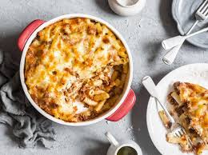

Deskripsi
Macaroni Schotel adalah hidangan panggang khas yang memadukan makaroni, daging cincang, susu, telur, dan keju, menghasilkan cita rasa gurih dengan tekstur lembut di dalam dan lapisan keju renyah di atasnya. Hidangan ini berasal dari pengaruh Belanda dan kini menjadi favorit di berbagai acara keluarga maupun santapan sehari-hari.
Bahan-Bahan yang Dibutuhkan
| Nama Bahan | Takaran |
|---|---|
| Macaroni | 200 gr |
| Daging Sapi Cincang | 200 gr |
| Susu Cair | 500 cc |
| Minyak Sayur | 1 sdm |
| Keju Parut | 100 gr |
| Mentega | 50 gr |
| Bawang Bombay | 50 gr |
| Telur Ayam | 4 butir |
| Bubuk Pala | 1/2 sdt |
| Bubuk Merica | 1/2 sdt |
| Garam | 1/4 sdt |
Langkah-Langkah Pembuatan
- Daging cincang direbus sampai berubah warna, tiriskan dan sisihkan air kaldunya untuk merebus makaroni.
- Rebus macaroni dengan air kaldu tadi, beri sedikit minyak sayur hingga empuk.
- Tumis bawang bombay sampai layu, masukkan daging cincang, garam, pala, merica, macaroni, susu, aduk rata hingga adonan agak mengental.
- Masukkan adonan ke pinggan yang sudah dilumuri mentega, kocok telur lalu tuang di atas adonan, tutup dengan parutan keju.
- Panggang pada suhu 160-180°C selama 30-40 menit sampai keju berwarna kecokelatan. Sajikan.
Biodata Koki

Nama Lengkap: Benedictus Karol Wojtyfa P.S
NIM: 71231054
Makanan Kesukaan: Nasi Padang
Instagram: @karolwojtyfa_